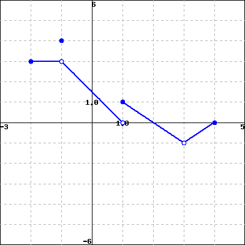

Let \(F\) be the function below.
If you are having a hard time seeing the picture clearly, click on the picture. It will expand to a larger picture on its own page so that you can inspect it more clearly.

Evaluate each of the following expressions.
Note: Enter ’DNE’ if the limit does not exist or is not defined.
a) \(\displaystyle \lim_{x \to -1^-} F(x)\) =
\(\displaystyle \lim_{x \to -1^+} F(x)\) =
\(\displaystyle \lim_{x \to -1} F(x)\) =
\(F(-1)\) =
b) \(\displaystyle \lim_{x \to 1^-} F(x)\) =
\(\displaystyle \lim_{x \to 1^+} F(x)\) =
\(\displaystyle \lim_{x \to 1} F(x)\) =
\(F(1)\) =
c) \(\displaystyle \lim_{x \to 3^-} F(x)\) =
\(\displaystyle \lim_{x \to 3^+} F(x)\) =
\(\displaystyle \lim_{x \to 3} F(x)\) =
\(F(3)\) =